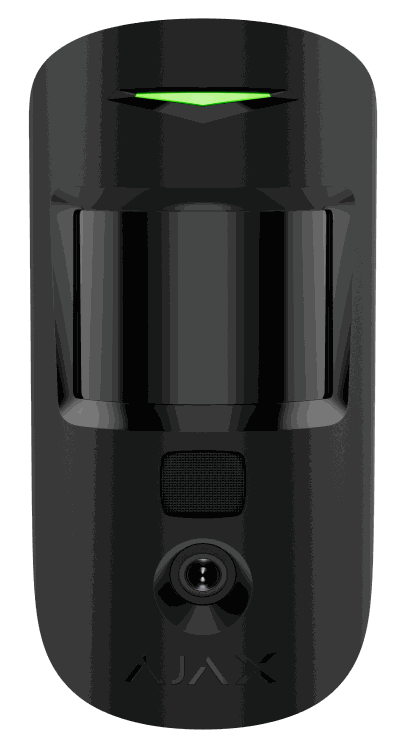
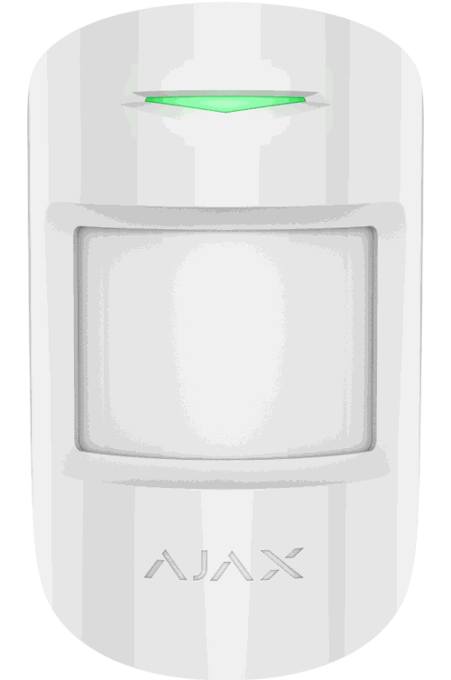

Installateur à La Réunion · partenaire agréé Ajax Systems
Nous venons chez vous. Nous étudions. Nous posons.
Active Sécurité 974 conçoit et installe l’alarme, la vidéo, l’incendie et la domotique Ajax, sur toute l’île. L’étude et le devis sont gratuits. Le matériel reste celui du fabricant : 287 références illustrées, chacune avec ses coloris officiels.
Maison ou activité, la visite est la même.
Nous nous déplaçons pour un logement comme pour un commerce. Le devis change parce que le lieu change.
Votre maison.
Ouvertures, volumes, animaux, absences. Une étude chez vous, puis une pose et la prise en main de l’application.

Votre activité.
Commerce, bureaux, entrepôt, plusieurs adresses. Zones, utilisateurs et, si le bâtiment l’exige, la ligne incendie EN54.

Les chiffres sont ceux d’Ajax, pas les nôtres.
Hub 2 annonce jusqu’à 2 000 m de radio en champ libre, une liaison Ethernet plus deux cartes SIM, et une batterie de secours jusqu’à 16 heures selon la version. MotionProtect annonce jusqu’à 12 m de détection et jusqu’à 5 ans de pile dans ses caractéristiques mises en avant. Ces valeurs se vérifient sur place : un mur en béton ou une tôle ne se comporte pas comme un champ libre. Le détail sourcé est sur chaque page de gamme.
Sources Ajax : Hub 2, MotionProtect.
De l’appel à la maintenance, dans l’ordre.
Vous décrivez le lieu. Nous venons. Nous notons les accès, les risques et les contraintes du bâtiment, y compris l’humidité, les coupures de courant et la couverture mobile quand elles comptent. Le devis détaille le matériel et la pose. Le jour de l’installation, nous posons, nous testons, nous réglons l’application et nous vous montrons comment vous en servir. Ensuite, le dépannage suit ce qui a été prévu au devis.
Ce que vous faites vraiment, une fois le système posé.
Vous armez en partant.
Depuis le clavier, un badge ou l’application. Un groupe peut rester ouvert, un autre se fermer : un bureau et une réserve ne vivent pas au même horaire.
Une alerte arrive, avec de quoi comprendre.
Le message dit quel appareil a parlé. S’il s’agit d’un MotionCam, Ajax décrit une série de photos, pas une simple sonnerie. Un détecteur sans photo ne prétend pas envoyer d’image.
La caméra peut lancer la sirène.
Sur Baseline comme sur Superior, l’IA reconnaît personnes, véhicules et animaux et peut déclencher l’alarme. Le réglage se fait caméra par caméra, pendant l’étude.
Un scénario coupe ou allume.
L’armement peut éteindre des lumières LightSwitch, ou une fuite détectée par LeaksProtect peut fermer une vanne WaterStop si l’étude a retenu ces appareils.
Quatre familles. Une seule application.
Choisissez la famille qui correspond au lieu. Chaque page détaille les performances annoncées par Ajax, l’étude, la pose et toutes les références.

01
Chaque accès sous contrôle.
Détection d’intrusion, commandes et sirènes Ajax Systems. Baseline pour l’essentiel sans fil ; Superior pour les architectures plus exigeantes.
92 références
02
Incendie EN54, pour les bâtiments.
Centrale, détecteurs, déclencheurs, sirènes et modules certifiés selon les normes publiées par Ajax. Pas les détecteurs de logement.
19 références
03
Voir, pour lever le doute.
Caméras, sonnette et enregistreurs, reliés à l’alarme.
59 références
04
Le confort, dans la même app.
Prises, relais, éclairage et alertes de fuite d’eau.
27 référencesQuestions fréquentes.
Où intervenez-vous à La Réunion ?
Chez le client, sur toute l’île : Saint-Denis, Saint-Pierre, Saint-Paul, Le Port, Saint-Benoît, les autres communes et les Hauts. Il n’y a pas de local ouvert au public.
Baseline et Superior vidéo ont-ils la même intelligence artificielle ?
Oui. Ajax équipe les deux lignes d’une IA qui reconnaît les personnes, les véhicules et les animaux, et peut déclencher l’alarme. Superior ajoute une IA enrichie, des optiques P-Iris et des enregistreurs NVR H2D.
Où sont les détecteurs de fumée pour une maison ?
Sur la page Alarme, dans « Compléter votre alarme ». FireProtect, FireProtect Plus et FireProtect 2 ne font pas partie de la page Incendie. Cette page est réservée à la ligne professionnelle EN54, pour les bâtiments.
Y a-t-il un prix sur le site ?
Non. Chaque référence est sur devis. L’étude et le devis sont gratuits, sans engagement, après un échange ou une visite chez vous.
Prêt à sécuriser votre espace ?
Étude et devis gratuits. Partenaire agréé Ajax Systems.